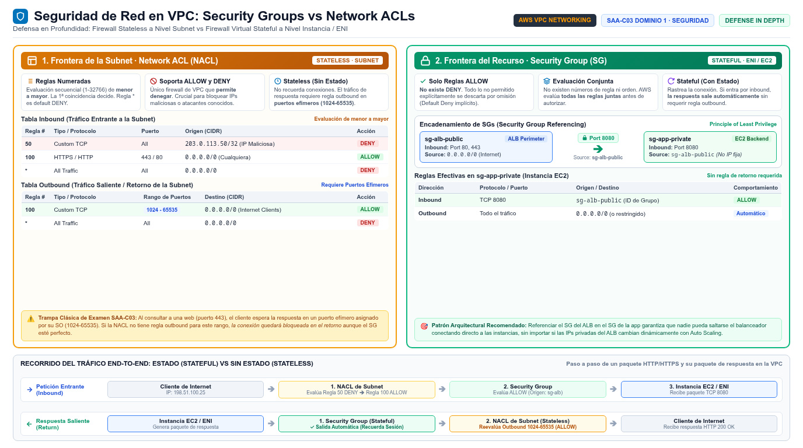

Security groups, NACLs y NAT VPC security groups · Network ACLs · NAT gateways
Los dos muros de la VPC y la puerta de salida: quién deja pasar el tráfico, en qué capa decide, y cómo salen a internet las subnets privadas.
En la VPC conviven dos firewalls con caracteres opuestos. El security group es el recepcionista personal de cada recurso: stateful, recuerda la conversación que dejó entrar y deja salir la respuesta sin preguntar nada. La network ACL es el portero del edificio — de la subnet —: stateless, revisa la lista de reglas en cada entrada y en cada salida, sin memoria de nada anterior. El tráfico que llega a una instancia atraviesa primero la NACL de la subnet y después el security group del recurso (y el inverso al salir). Ambas capas se combinan: la NACL filtra en bloque por subnet, el SG filtra fino por recurso.
El tercer actor de la página es el NAT gateway: la puerta unidireccional que permite a las instancias de subnets privadas iniciar conexiones hacia fuera (internet, otras redes) impidiendo que el exterior inicie conexiones hacia ellas — la definición oficial es exactamente esa. El examen mezcla los tres conceptos en escenarios de "instance in a private subnet cannot reach the internet" y "block a malicious IP address": la primera se resuelve con ruta a NAT, la segunda exige una NACL con regla deny, porque los security groups no saben denegar. Domina el vocabulario en inglés: stateful, stateless, inbound/outbound rules, allow/deny.

Security groups: el firewall stateful de instancia
Un security group controla el tráfico que puede llegar y salir de los recursos con los que está asociado — instancia EC2, ENI, y de hecho actúa como virtual firewall a nivel de instancia. En cada regla inbound especificas source, protocolo y rango de puertos; en cada outbound, destination, protocolo y puertos. Al crear una VPC recibes el default security group: permite que los miembros del grupo se hablen entre sí y todo el tráfico de salida; el resto de grupos que crees empiezan cerrados. Los tres rasgos de examen son: son stateful (si dejas entrar una conexión, su respuesta sale automáticamente aunque las reglas outbound no la mencionen); solo admiten reglas allow — no existe el deny — y todas las reglas se evalúan juntas antes de decidir, no en orden.
El truco de diseño que más pregunta el examen es usar referencias entre security groups: la source de una regla puede ser otro SG en vez de un CIDR. Así, "el SG del ALB puede hablar al puerto 8080 del SG-app" sigue funcionando aunque cambien las IPs, y queda una malla de permisos por función. Combínalo con el principio de least privilege de la capa de red: puertos concretos hacia grupos concretos, nunca 0.0.0.0/0 salvo en el punto de entrada público. Recuerda también que puedes mover un SG entre VPCs de la organización (compartirlos) y que los grupos se aplican a ENIs — por eso una instancia puede tener varios SG en varias tarjetas de red.
Network ACLs: el firewall stateless de subnet
Una network access control list permite o deniega tráfico inbound y outbound a nivel de subnet, como capa adicional de seguridad. Sus rasgos de examen son simétricos a los del SG: es stateless — el tráfico de retorno debe estar permitido explícitamente en la dirección contraria, ojo con los ephemeral ports (1024-65535) en las respuestas de internet—; admite reglas allow y deny; evalúa las reglas numeradas en orden (la regla con número menor gana, y la primera que coincide decide, terminando la evaluación); y cada subnet se asocia a una NACL a la vez, aunque una NACL sirve a varias subnets. La NACL por defecto de la VPC deja pasar todo; una custom NACL recién creada deniega todo hasta que añadas reglas. No tiene coste adicional.
Su nicho natural es el filtrado grueso en la frontera de la subnet: bloquear una IP maliciosa concreta (una regla deny con número bajo, imposible de expresar con SG), permitir SSH solo desde la subnet de administración, o crear perímetros distintos para subnets distintas con el mismo "conjunto" de reglas. El examen verbaliza la distinción así: si el enunciado dice "deny", "block a specific IP" o "apply rules to an entire subnet", piensa NACL; si dice "allow", "per instance" o "reference another group", piensa SG. En producción la mayoría de arquitecturas usan SGs y dejan la NACL default intacta — y esa es también una respuesta válida cuando la pregunta es por least operational overhead.
| Dimensión | Security group | Network ACL |
|---|---|---|
| Nivel | Recurso / instancia (ENI) | Subnet |
| Estado | Stateful: el retorno se permite automáticamente | Stateless: el retorno necesita regla explícita (puertos efímeros) |
| Reglas | Solo allow (no existe deny) | Allow y deny |
| Evaluación | Todas las reglas antes de decidir | En orden por número de regla; la primera coincidente decide |
| Comportamiento por defecto | Grupo nuevo: todo denegado (salvo salida si es el default) | NACL default: todo permitido; custom: todo denegado |
| Asociación | Un recurso puede tener varios SGs | Una subnet ↔ una NACL (una NACL ↔ muchas subnets) |
| Referencias inteligentes | Sí: source/destination puede ser otro SG | No: solo CIDRs |
| Caso de uso estrella | Permisos finos por función / instancia | Bloquear IPs maliciosas; perímetros por subnet |
NAT: salida a internet desde subnets privadas
El NAT gateway es un servicio de traducción de direcciones: las instancias de una private subnet conectan con servicios fuera de la VPC, pero los servicios externos no pueden iniciar conexiones hacia ellas. Existen dos modos. La public NAT gateway (la clásica) se crea en una public subnet y requiere asociarle una Elastic IP en la creación; su tráfico hacia internet se encamina al internet gateway de la VPC — y también puede encaminar hacia otras VPCs o on-premises vía Transit Gateway o virtual private gateway. La private NAT gateway no lleva Elastic IP y sirve para conectar private subnets con otras VPCs o redes on-premises a través de TGW/VGW, sin salida a internet: si envías su tráfico a un IGW, el IGW lo descarta. Ambas traducen el origen a la IP del NAT y devuelven las respuestas al origen original; y en ambos casos las conexiones deben iniciarse desde dentro de la VPC del NAT.
El examen contrapone NAT gateway con la vieja NAT instance — una EC2 con rol de NAT que tú gestionas. La gateway es un servicio gestionado sin tu intervención: escala el ancho de banda bajo demanda, es tolerante a fallos dentro de su AZ (despliega una por AZ y rutas específicas por AZ para alta disponibilidad real) y no necesita parchear ni security groups (no se le asocian). La instancia es un single point of failure con banda limitada por su tipo, fuente de bastantes distracciones "manuales". En IPv6 la lógica cambia: para salida-only existe el egress-only internet gateway, y el NAT gateway también cubre IPv6 mediante DNS64/NAT64 para VPCs IPv6-only que deban hablar con destinos IPv4.
| Dimensión | NAT gateway | NAT instance |
|---|---|---|
| Naturaleza | Servicio gestionado de VPC | Instancia EC2 que tú administras |
| Alta disponibilidad | Tolerante a fallos dentro de la AZ; multi-AZ con una por AZ | Single point of failure (con failover manual) |
| Ancho de banda | Escala automáticamente hasta decenas de Gbps | Limitado por el instance type |
| Mantenimiento | Ninguno: sin parches ni gestión del SO | Parcheado, tuning y scripts tuyos |
| Security groups | No aplican al gateway | Sí: es una instancia normal |
| Requisitos de red | Public: subnet pública + Elastic IP; Private: ruta vía TGW/VGW | Source/destination check desactivado manualmente |
private subnet"] -->|"ruta 0.0.0.0/0
a nat-gateway"| N["NAT gateway
en public subnet"] N -->|"traduce el origen
a su Elastic IP"| IGW["Internet gateway"] IGW -->|"la respuesta vuelve
a la instancia"| I H["Host externo"] -.->|"no puede iniciar
conexiones entrantes"| N classDef navy fill:#EFF6FF,stroke:#3B82F6,stroke-width:2px,color:#1E293B classDef green fill:#F0FDF4,stroke:#10B981,stroke-width:2px,color:#1E293B classDef amber fill:#FFF7ED,stroke:#F59E0B,stroke-width:2px,color:#1E293B class I,H navy class N,IGW green
| Si el enunciado dice… | La respuesta apunta a… |
|---|---|
| "deny traffic from a known malicious IP" | Network ACL con regla deny (numbered) |
| "rules must apply to all instances in the subnet" | NACL (nivel subnet) |
| "reference another group as source" | Security group referencing |
| "EC2 in private subnet cannot download patches" | Ruta a NAT gateway (public subnet + EIP) |
| "need distinct rules per subnet, ordered" | NACLs custom por subnet |
| "eliminate single point of failure of NAT" | Una NAT gateway por AZ con rutas específicas |
- SG: instancia/ENI, stateful, solo allow, todas las reglas se evalúan juntas; puede referenciar otros SGs.
- NACL: subnet, stateless, allow y deny, reglas numeradas en orden; default permite todo, custom deniega todo.
- Denegar una IP concreta exige NACL deny; filtrar fino por función exige SG.
- Stateless = abrir el retorno (ephemeral ports) explícitamente; stateful = retorno automático.
- NAT gateway pública: public subnet + Elastic IP + ruta al IGW; salida-only, nunca entrada iniciada fuera.
- NAT gateway privada: hacia otras VPCs/on-prem vía TGW/VGW, sin EIP ni internet.
- NAT gateway (gestionada, por AZ) > NAT instance (SPOF) en casi toda respuesta de examen.
- IPv6 salida-only → egress-only internet gateway; VPC IPv6-only → NAT64/DNS64.
- NET-04 VPC — Security groups (stateful, instance level) · docs.aws.amazon.com/vpc/latest/userguide/VPC_SecurityGroups.html
- NET-05 VPC — Network ACLs (stateless, subnet level) · docs.aws.amazon.com/vpc/latest/userguide/vpc-network-acls.html
- NET-06 VPC — NAT gateways vs NAT instances · docs.aws.amazon.com/vpc/latest/userguide/vpc-nat-gateway.html